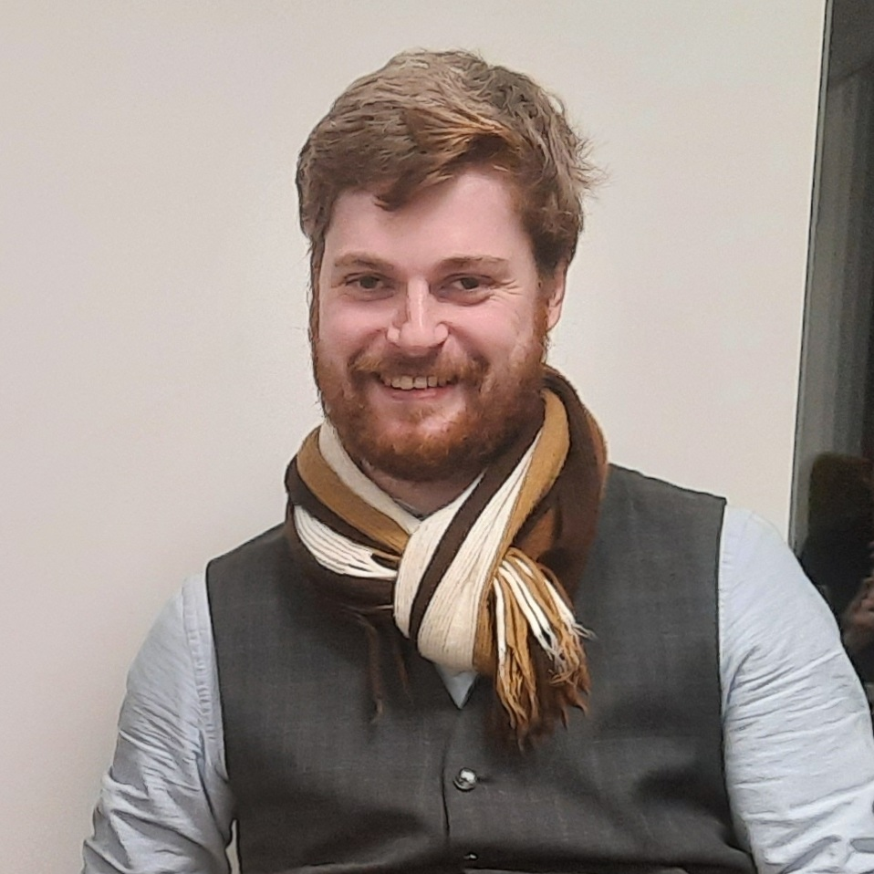

|  | Chris G. Willcocks Assistant Professor Department of Computer Science Durham University Office: E111a Tel: +44 (0) 191 334 4854 |
Research
My research spans a number of areas in Computer Science, including Machine Learning, Computational Geometry, Generative Models, Level-set Methods, and Meta Learning. Here is a list of my publications. For recent news please visit my twitter profile, and for software updates visit my github page.
Selected Publications
- Bond-Taylor, S., & Willcocks, C. G. (2020). Gradient origin networks. arXiv preprint arXiv:2007.02798. URL: https://arxiv.org/abs/2007.02798
- Ramaswamy, V. K., Willcocks, C. G., & Degiacomi, M. T. (2019 , 10). Learning protein conformational space by enforcing physics with convolutions and latent interpolations. arXiv preprint arXiv:1910.04543. URL: https://arxiv.org/abs/1910.04543
- Akcay, S., Kundegorski, M. E., Willcocks, C. G., & Breckon, T. P. (2018 , 9). Using deep convolutional neural network architectures for object classification and detection within x-ray baggage security imagery. IEEE Transactions on Information Forensics and Security, 13(9), 2203-2215. doi:10.1109/TIFS.2018.2812196
- Nasrulloh, A. V., Willcocks, C. G., Jackson, P. T. G., Geenen, C., Habib, M. S., Steel, D. H. W., & Obara, B. (2018 , 2). Multi-scale segmentation and surface fitting for measuring 3d macular holes. IEEE Transactions on Medical Imaging, 37, 580-589. doi:10.1109/TMI.2017.2767908
- Willcocks, C. G., Jackson, P. T.G., Nelson, C. J., & Obara, B. (2017 , 9). Extracting 3d parametric curves from 2d images of helical objects. IEEE Transactions on Pattern Analysis and Machine Intelligence, 39(9), 1757-1769. doi:10.1109/TPAMI.2016.2613866
Teaching
I teach the year three Deep Learning submodule and the year two Cyber Security submodule. Slides and other material are available in the teaching section. Past teaching:
- Deep Learning (2019-present)
- Cyber Security (2017-present)
- Machine Learning (2018)
Biography
I am an Assistant Professor in Computer Science at Durham University and a member of the Innovative Computing Group (ICG). I cofounded the research spinout company Intogral Limited which deploys deep learning models in the area of medical image computing. Previously I worked as a PDRA for Newcastle University, Durham University, and have been a visiting scholar at both the Chinese University of Hong Kong (CUHK) and the Hong Kong University of Science and Technology (HKUST). My interdisciplinary research focuses on providing elegant solutions to computationally expensive or ill-defined problems within the fields of computational geometry, cyber security, machine learning, medical image computing and biophysics.
Professional Activities
- Invited speaker at 2020 Cyber Operational Conference on ‘Meta learning: Smart Interfacing’.
- Area Chair of BMVA 2020 Conference.
- Participating scientist on scientist next door.
- Invited speaker at Chinese University of Hong Kong (CUHK), 13th Aug 2019.
- Chair of BMVA symposium of ‘Deep Learning in 3-Dimensions’, 20th Feb 2019.
- Speaker on BBC Sunday Politics discussing Cyber Security spending in public bodies.
- Invited to present at Durham Celebrating Excellence research exhibition.
- Member of W3C Web Assembly.
- Reviewer of EPSRC grants.
- Reivewer for IEEE Transactions on Medical Imaging.
- Reivewer for IEEE Transactions on Image Processing.
- Reviewer for IEEE Transactions on Pattern Analysis and Machine Intelligence.
- Currently pursing Fellowship in HEA through PGCLTHE course.
- Member of Innovate Computing Research Group (ICG).